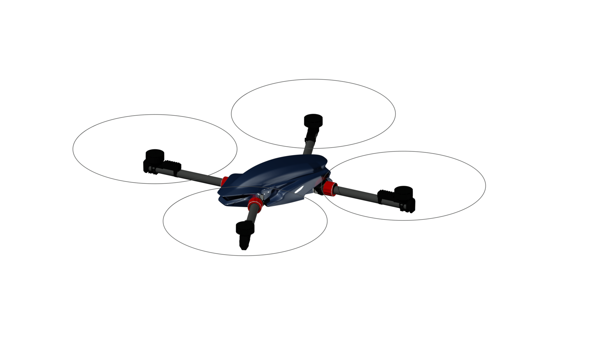
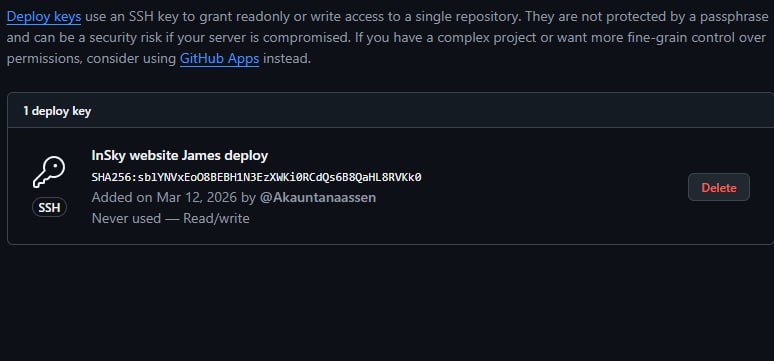

Legal platform
Legal keeps 55 lb missions compliant, monitored, and ready for tactical deployment.
Designed to deliver AltaX-level agility while staying inside the FAR Part 107 55 lb (25 kg) ready-to-fly cap, Legal lets teams reuse 12 mm rails and Freefly's Toad-in-the-Hole connector without rebuilding their payload stacks.
Every build is logged in our memory system, and heartbeat cron jobs validate compliance before we ship any aircraft—so the legal story you read here matches what operators fly.
Sportscar performance that respects the 55 lb rule.
Legal is a platform built for pilots who need the agility of the AltaX while staying inside Part 107 unless a waiver is in place. It’s lightweight enough for rapid deployment and still delivers endurance gains when the mission allows higher MTOW.
Think of it as a dual-mode aircraft—fully compliant when needed, and performance-forward when the mission demands more. The unused lift margin translates directly into extra endurance.
We capture every regulatory detail in the same memory stack that keeps the main Heavy Lift page ready for mission briefings.
Quick facts
- Frame: 9900 g without battery, < 15 kg ready for payload.
- Rating: Under 55 lb takeoff weight; MTOW up to 44 kg when permitted.
- Accessories: 12 mm rail attachments + Freefly's Toad-in-the-Hole connector on mission bays.
- Mission kits: Speed rail, LiDAR, EO/IR, delivery baskets.
Built to play in the AltaX ecosystem.
Legal interfaces directly with the Freefly accessory ecosystem, so you can attach any 12 mm rail kit or Freefly's Toad-in-the-Hole connectors without rework. We attribute the trademark to Freefly to keep the message clear—this platform is compatible with their industry-standard mounting hardware without implying endorsement.
You get the freedom to swap payloads mid-mission while keeping a consistent feel for pilots who already know AltaX.

Performance envelope
Empty weight: 9900 g
Ready weight: up to 15 kg depending on battery choice
Maximum takeoff weight: 44 kg (waiver required for operations above 55 lb)
Endurance: Extra lift capacity converts into longer sorties when payload is limited
Payload interface: 12 mm rail, Freefly's Toad-in-the-Hole, modular mission bays
Propulsion: High-efficiency dual coaxial / quad setups (battery or hybrid)
Avionics: RTK, redundant IMUs, optional parachute
Transport case: Folding arms + quick-attach mission kits
Operational temp: -20° to 45° C
Ingress protection: IP54
Engineering transparency
Legal is not off-the-shelf. Every bracket, rail, and connector was designed to balance strength with the FAR 107 cycle. The render captures the frame we’ll ship to customers, while the wireframe image shows the internal ribs and access points that keep maintenance fast.
All customers receive a detailed setup manual that matches the photo catalogue you see here.


Need a tailored legal solution?
Tell us about your mission
We’ll map Legal into your workflow, connect it with your payload kits, and help scope any regulatory needs.
Every request here is routed through the same heartbeat cron that keeps our deployments predictable.
Go to Contact Form